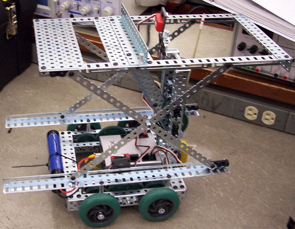
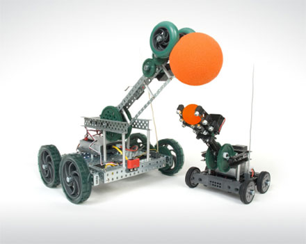

- 
-

- 
We are a dedicated Robotics team in Sir John A. Macdonald C.I. in Toronto. We have students specializing in different departments in robots. We have students doing Design, build, engineering, driving, programing and sponsoring.
We will be competing in Vex and FIRST robotics. we will be building and design our robot. Our robots will be tested thouroughly and optimized for the competitions.
We are very commited to science and technology we do food drives and donate our proceeds to local homeless shelters.
Participates will be able to join and help out in any aspects they want in robotics. They will be trained in build, designing and engineering. Senior members will mentor and teach the new team member.